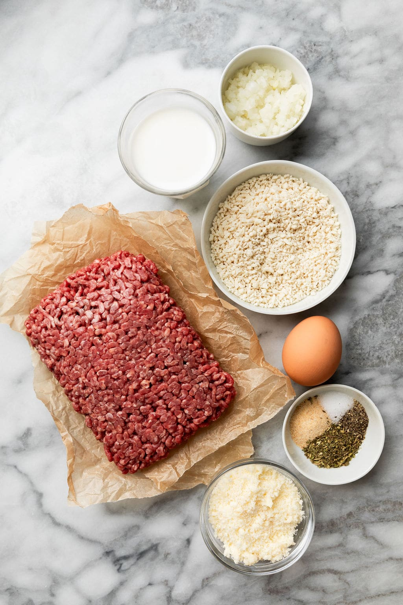
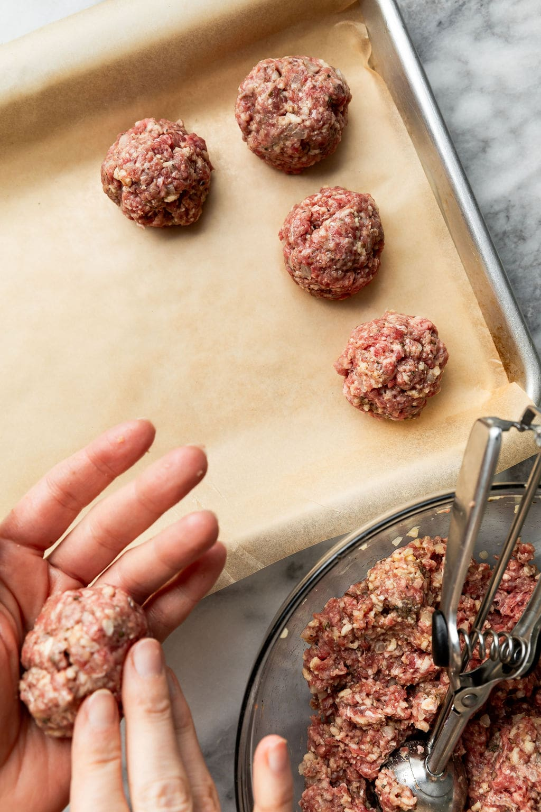
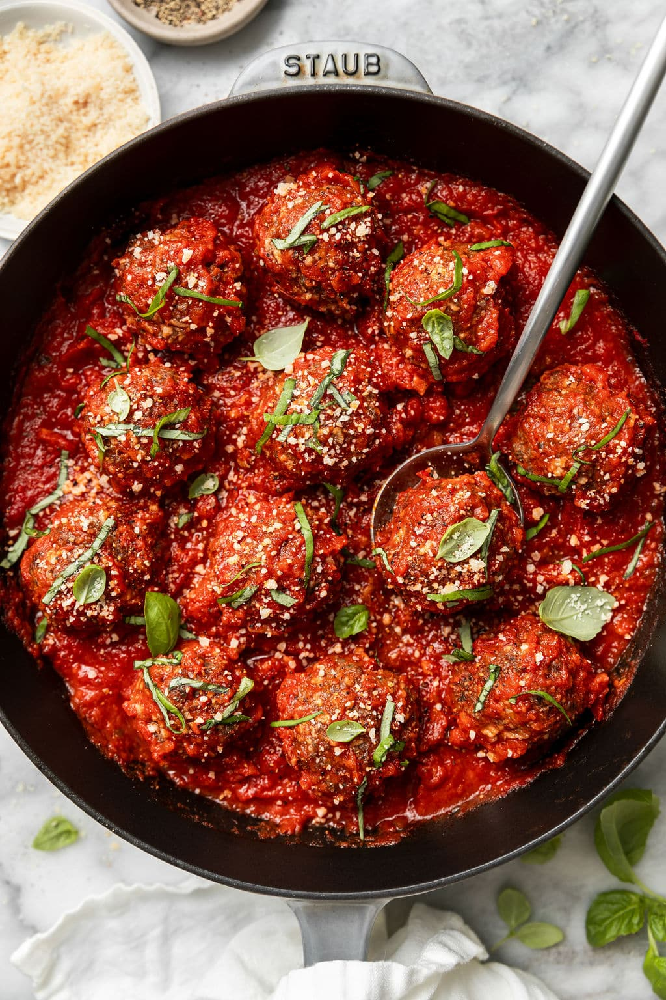

Ingredients
Directions
- Preheat oven to 400℉. Line a rimmed sheet pan with parchment paper. Set aside.
- In a medium bowl, combine the beef, egg, milk, crushed crackers, Parmesan cheese, onion, Italian seasoning, garlic power, salt, and pepper. Mix until well combined.
- Form the mixture into 12 meatballs, using your hands or with a cookie scoop into about golf-ball size balls.
- Place the meatballs on the prepared baking sheet.
- Bake for 16-20 minutes or until internal temperature reaches 165℉.
- Remove meatballs from the oven.
- Optional step: Heat pasta sauce in a skillet over medium heat. When the meatballs are done baking, transfer them to the skillet with the sauce and gently toss. Heat through then garnish with chopped parsley and grated Parmesan cheese. Serve over noodles or zucchini noodles.